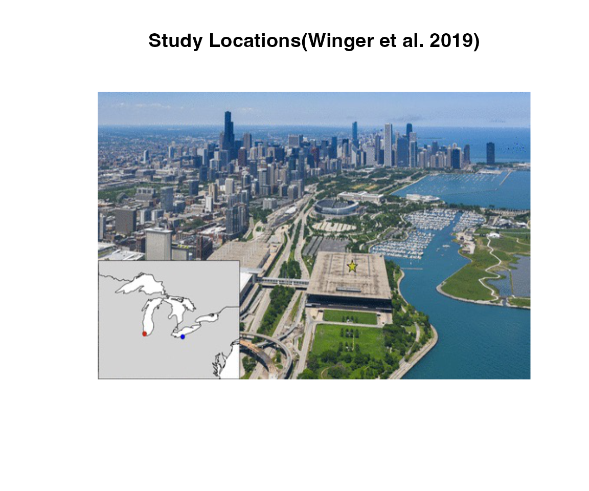
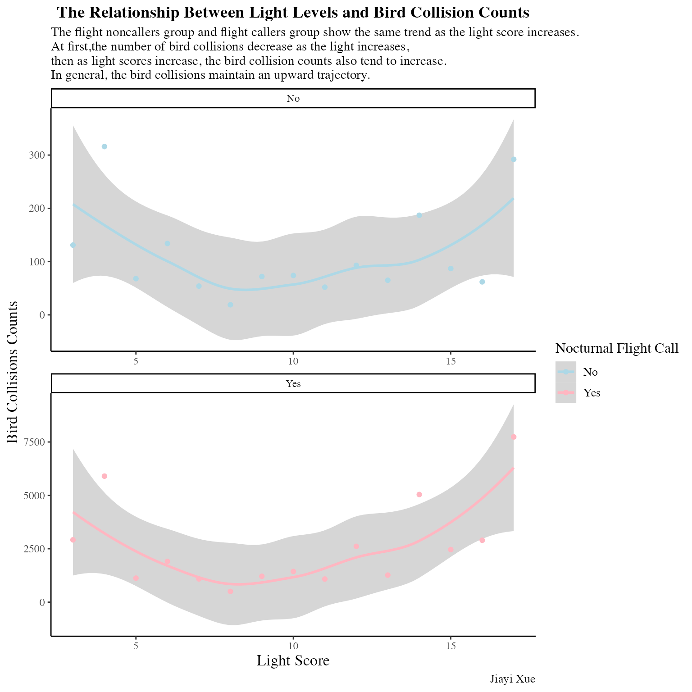
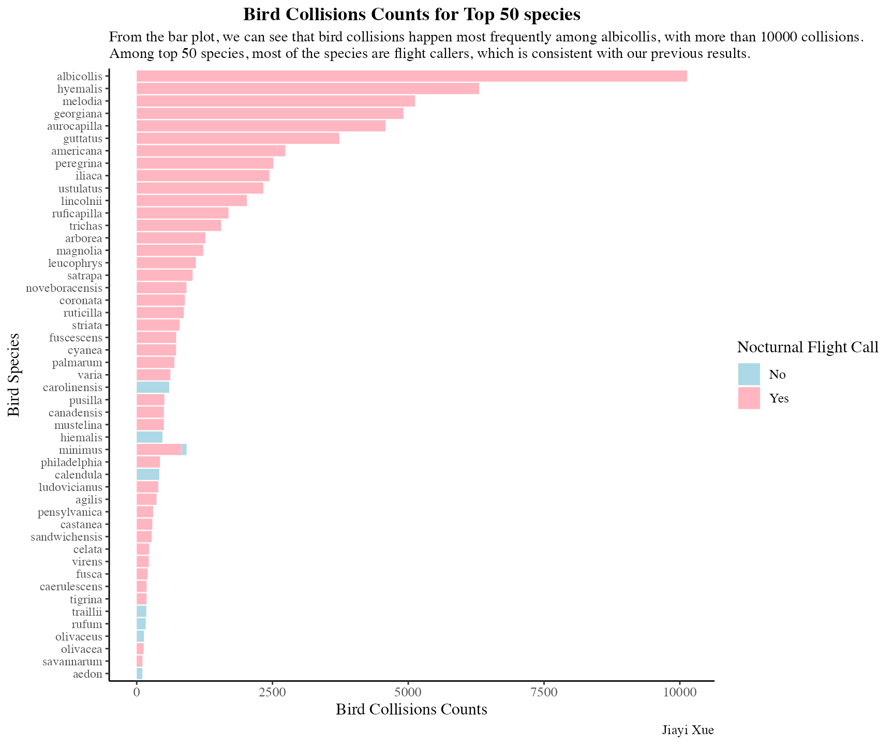
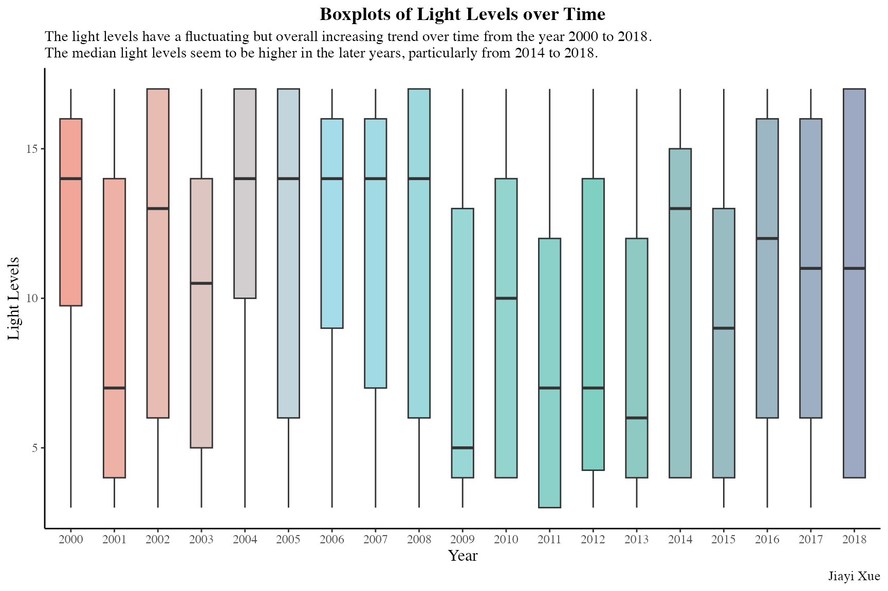

library(jpeg)
library(tidyverse)
#> ── Attaching packages ─────────────────────────────────────── tidyverse 1.3.2 ──
#> ✔ ggplot2 3.4.0 ✔ purrr 1.0.2
#> ✔ tibble 3.2.1 ✔ dplyr 1.1.4
#> ✔ tidyr 1.3.0 ✔ stringr 1.5.0
#> ✔ readr 2.1.4 ✔ forcats 0.5.2
#> Warning: package 'dplyr' was built under R version 4.2.3
#> ── Conflicts ────────────────────────────────────────── tidyverse_conflicts() ──
#> ✖ dplyr::filter() masks stats::filter()
#> ✖ dplyr::lag() masks stats::lag()
library(here)
#> here() starts at /Users/jiayixue/Downloads/Project3/jpeg_package
library(purrr)
library(lubridate)
#> Loading required package: timechange
#>
#> Attaching package: 'lubridate'
#>
#> The following objects are masked from 'package:base':
#>
#> date, intersect, setdiff, unionQuestion
I tried to use this dataset to find the relationship between light levels and bird collisions with or without flight calls. Also we want to identify the trend of light levels over time.
Data recourses
The data comes from a research which examined nocturnal flight-calling behavior and vulnerability to artificial light in migratory birds in Chicago(Winger et al. 2019).
I downloaded this dataset from here. You can also download this dataset using “tidytuesdayR” package. The data I used only containing the raw and tamed Chicago dataset as it is the most complete.
We can use the readJPEG() function in the jpeg package
to read an image from a JPEG, and then we can plot the figure.
study_locations <- jpeg::readJPEG(here("study_locations.jpeg"), TRUE)
if (exists("rasterImage")) { # can plot only in R 2.11.0 and higher
plot(1:2, type='n', axes=FALSE, xlab="", ylab="", main = "Study Locations(Winger et al. 2019)")
rasterImage(study_locations, 1, 1, 2, 2)
}
We can also use the writeJPEG() function in the
jpeg package to create a JPEG image from an array or
matrix. At the same time, we can change the quality and the background
color of the image.
study_locations_arrary <- writeJPEG(study_locations, raw(), quality= 0.3)
study_locations_2 <- readJPEG(study_locations_arrary)
if (exists("rasterImage")) { # can plot only in R 2.11.0 and higher
plot(1:2, type='n', axes=FALSE, xlab="", ylab="", main = "Study Locations(Winger et al. 2019)")
rasterImage(study_locations, 1, 1, 2, 2)
}
object.size(study_locations)
#> 602616 bytes
object.size(study_locations_2)
#> 3612224 bytesWe can see that after applying writeJPEG() function, the
size of the image has changed.
Data Dictionary
bird collisions dataset
| Variable | Description |
|---|---|
| genus | Bird Genus |
| species | Bird species |
| date | Date of collision death (ymd) |
| locality | MP or CHI - recording at either McCormick Place or greater Chicago area |
| family | Bird Family |
| flight_call | Does the bird use a flight call - yes or no |
| habitat | Open, Forest, Edge - their habitat affinity |
| stratum | Typical occupied stratum - ground/low or canopy/upper |
bird collisions dataset
| Variable | Description |
|---|---|
| date | Date of light recording (ymd) |
| light_score | Number of windows lit at the McCormick Place, Chicago - higher = more light |
You can also find the data dictionary here
Load the data into R
if (!dir.exists(here("data"))) {
dir.create(here("data"))
}
# saves data only once (not each time you knit a R Markdown)
if (!file.exists(here("data", "bird_collisions.rda"))) {
url_csv <- "https://raw.githubusercontent.com/rfordatascience/tidytuesday/master/data/2019/2019-04-30/bird_collisions.csv"
bird_collisions <- readr::read_csv(url_csv)
# save the file to rda objects
save(bird_collisions, file = here("data", "bird_collisions.rda"))
}
# Read in the data locally
load(here("data", "bird_collisions.rda"))
# load the second dataset
if (!file.exists(here("data", "mp_light.rda"))) {
url_csv <- "https://raw.githubusercontent.com/rfordatascience/tidytuesday/master/data/2019/2019-04-30/mp_light.csv"
mp_light <- readr::read_csv(url_csv)
# save the file to rda objects
save(mp_light, file = here("data", "mp_light.rda"))
}
# Read in the data locally
load(here("data", "mp_light.rda"))data wrangling and data visualization
In order to look at the effects of light on bird collisions, we join the two datasets, which may drop many rows in the bird_collisions data frame.
bird_collisions_light <- inner_join(bird_collisions, mp_light,
by = "date")
#> Warning in inner_join(bird_collisions, mp_light, by = "date"): Detected an unexpected many-to-many relationship between `x` and `y`.
#> ℹ Row 5289 of `x` matches multiple rows in `y`.
#> ℹ Row 9 of `y` matches multiple rows in `x`.
#> ℹ If a many-to-many relationship is expected, set `relationship =
#> "many-to-many"` to silence this warning.First of all, let’s look at the relationship between bird collision counts of species and the flight calls. There are two species (Pipilo erythrophthalmus and Tyrannus tyrannus) giving nocturnal flight calls only rarely. During the data analysis, authors found that “classification of these species as ‘yes’ or ‘no’ for flight-calling behaviour did not affect our results” and classified these two species as ‘no’(Winger et al. 2019). Here, we also classified these two species as ‘no’ to make analysis easier.
is_yes <- function(x) ifelse(x == "Yes", 1, 0)
is_no <- function(x) ifelse(x == "No" || x == "Rare", 1, 0)
flight_call_list <- c(freq_yes = mean(map_lgl(bird_collisions_light$flight_call, is_yes)),
freq_no = mean(map_lgl(bird_collisions_light$flight_call, is_no)))
print(flight_call_list)
#> freq_yes freq_no
#> 0.95828137 0.04171863From the results, we can conclude that most of the bird collisions happen within the flight callers which use vocal signals during their nocturnal migrations to function as important social cues that may aid in orientation, navigation and other decision-making behaviours. The effect of flight calling is evident so we need to consider the flight call in the following analysis.
Then we want to look at the relationship between the light levels and collision counts.
#First, we classified two species with 'rare' calls as 'no'.
bird_collisions_light$flight_call <-
map_chr(bird_collisions_light$flight_call, ~ if_else(.x == "Rare", "No", .x))
# the bird collisions count among flight noncallers
collision_counts_light_noncaller <-
bird_collisions_light %>%
filter(flight_call == "No" ) %>%
group_by(light_score) %>%
summarise(count = n()) %>%
ungroup() %>%
split(.$light_score) %>%
map_df(~ summarise(., light_score, count = sum(.$count)))
collision_counts_light_noncaller
#> # A tibble: 15 × 2
#> light_score count
#> <dbl> <int>
#> 1 3 131
#> 2 4 316
#> 3 5 68
#> 4 6 134
#> 5 7 54
#> 6 8 19
#> 7 9 72
#> 8 10 74
#> 9 11 52
#> 10 12 93
#> 11 13 65
#> 12 14 187
#> 13 15 87
#> 14 16 62
#> 15 17 292
# the bird collisions count among flight callers
collision_counts_light_caller <-
bird_collisions_light %>%
filter(flight_call == "Yes") %>%
group_by(light_score) %>%
summarise(count = n()) %>%
ungroup() %>%
split(.$light_score) %>%
map_df(~ summarise(., light_score, count = sum(.$count)))
collision_counts_light_caller
#> # A tibble: 15 × 2
#> light_score count
#> <dbl> <int>
#> 1 3 2917
#> 2 4 5900
#> 3 5 1124
#> 4 6 1908
#> 5 7 1089
#> 6 8 502
#> 7 9 1211
#> 8 10 1437
#> 9 11 1082
#> 10 12 2613
#> 11 13 1266
#> 12 14 5040
#> 13 15 2463
#> 14 16 2898
#> 15 17 7737
# the bird collisions count
collision_counts_light <-
bird_collisions_light %>%
group_by(light_score, flight_call) %>%
summarise(count = n()) %>%
group_split() %>%
bind_rows()
#> `summarise()` has grouped output by 'light_score'. You can override using the
#> `.groups` argument.
ggplot(collision_counts_light) +
geom_smooth(mapping = aes(x = light_score, y = count, color = flight_call))+
geom_point(mapping = aes(x = light_score, y = count, color = flight_call)) +
facet_wrap(~flight_call, ncol = 1, scales = "free" ) +
scale_color_manual(values = c("lightblue", "lightpink")) +
theme_classic(base_family = "Times") +
labs(
x = "Light Score",
y = "Bird Collisions Counts",
title = "The Relationship Between Light Levels and Bird Collision Counts",
subtitle = "The flight noncallers group and flight callers group show the same trend as the light score increases.\nAt first,the number of bird collisions decrease as the light increases,\nthen as light scores increase, the bird collision counts also tend to increase.\nIn general, the bird collisions maintain an upward trajectory.",
caption = "Jiayi Xue",
color = "Nocturnal Flight Call"
) +
theme(
plot.title = element_text(size = 14, face = "bold", hjust = 0.5),
plot.caption = element_text(size = 10),
axis.text.y = element_text(size = 9),
axis.title = element_text(size = 13),
legend.text = element_text(size = 10),
legend.title = element_text(size = 12))
#> `geom_smooth()` using method = 'loess' and formula = 'y ~ x'
Then let’s find out the top 50 species most commonly reported in the bird collisions. Since now we are not going to look at the effects of light levels, we will use the original bird collision dataset so that more data were collected.
bird_collisions_species <-
bird_collisions %>%
group_by(species, flight_call) %>%
summarise(count = n()) %>%
mutate(species = fct_reorder(species, count, .desc = T)) %>%
arrange(desc(count))
#> `summarise()` has grouped output by 'species'. You can override using the
#> `.groups` argument.
bird_collisions_species
#> # A tibble: 84 × 3
#> # Groups: species [81]
#> species flight_call count
#> <fct> <chr> <int>
#> 1 albicollis Yes 10133
#> 2 hyemalis Yes 6303
#> 3 melodia Yes 5124
#> 4 georgiana Yes 4910
#> 5 aurocapilla Yes 4580
#> 6 guttatus Yes 3729
#> 7 americana Yes 2735
#> 8 peregrina Yes 2515
#> 9 iliaca Yes 2443
#> 10 ustulatus Yes 2331
#> # ℹ 74 more rows
ggplot(bird_collisions_species[1:50, ]) +
geom_col(mapping = aes(x = count, y = reorder(species, count), fill = flight_call)) +
theme_classic(base_family = "Times") +
labs(
x = "Bird Collisions Counts",
y = "Bird Species",
title = "Bird Collisions Counts for Top 50 species",
subtitle = "From the bar plot, we can see that bird collisions happen most frequently among albicollis, with more than 10000 collisions.\nAmong top 50 species, most of the species are flight callers, which is consistent with our previous results.",
caption = "Jiayi Xue",
fill = "Nocturnal Flight Call",
) +
scale_fill_manual(values = c("lightblue", "lightpink")) +
theme(
plot.title = element_text(size = 14, face = "bold", hjust = 0.5),
plot.caption = element_text(size = 10),
axis.text.x = element_text(size = 10),
axis.text.y = element_text(size = 9),
axis.title = element_text(size = 12),
legend.text = element_text(size = 10),
legend.title = element_text(size = 12))
Finally, let’s look at the distribution of the light levels as the time goes from 2000 to 2018.
light_years <-
mp_light %>%
mutate(year = lubridate::year(date))
light_years
#> # A tibble: 3,067 × 3
#> date light_score year
#> <date> <dbl> <dbl>
#> 1 2000-03-06 3 2000
#> 2 2000-03-08 15 2000
#> 3 2000-03-10 3 2000
#> 4 2000-03-31 3 2000
#> 5 2000-04-02 17 2000
#> 6 2000-04-14 4 2000
#> 7 2000-04-15 4 2000
#> 8 2000-04-30 14 2000
#> 9 2000-05-01 14 2000
#> 10 2000-05-03 3 2000
#> # ℹ 3,057 more rows
color_list <-
colorRampPalette(ggsci::pal_npg("nrc", alpha = 0.6)(4),space = "Lab")(19)
ggplot(light_years) +
geom_boxplot(mapping = aes(x = as.factor(year), y = light_score, fill = as.factor(year)), width = 0.5, alpha = 0.5) +
theme_classic(base_family = "Times") +
labs(
x = "Year",
y = "Light Levels",
title = "Boxplots of Light Levels over Time",
fill = "Year",
subtitle = "The light levels have a fluctuating but overall increasing trend over time from the year 2000 to 2018. \nThe median light levels seem to be higher in the later years, particularly from 2014 to 2018.",
caption = "Jiayi Xue"
) +
scale_fill_manual( values = color_list) +
theme(
plot.title = element_text(size = 14, face = "bold", hjust = 0.5),
plot.caption = element_text(size = 10),
axis.text = element_text(size = 9),
axis.title = element_text(size = 12),
legend.position = "none")
Summary
The dataset collects the bird collision data in Chicago. The scatter plots shows that bird collisions happen more frequently as the light level increases. The bar plot displays the collision counts for the top 50 species, which indicates the evident effect of the flight calls. The boxplots indicates the overall increasing trend of the collisions over time. Together, we find that there are many factors influencing the number of bird collisions.
functions used
| Package | Function |
|---|---|
dylyr |
group_by(), ungroup(),
summarise, filter(), mutate(),
arrange(), inner_join()
|
forcats |
fct_reorder() |
ggplot2 |
geom_point(), geom_smooth(),
geom_col(), geom_boxplot()
|
lubridate |
year() |
purrr |
map_lgl(), map_df(),
map_chr()
|